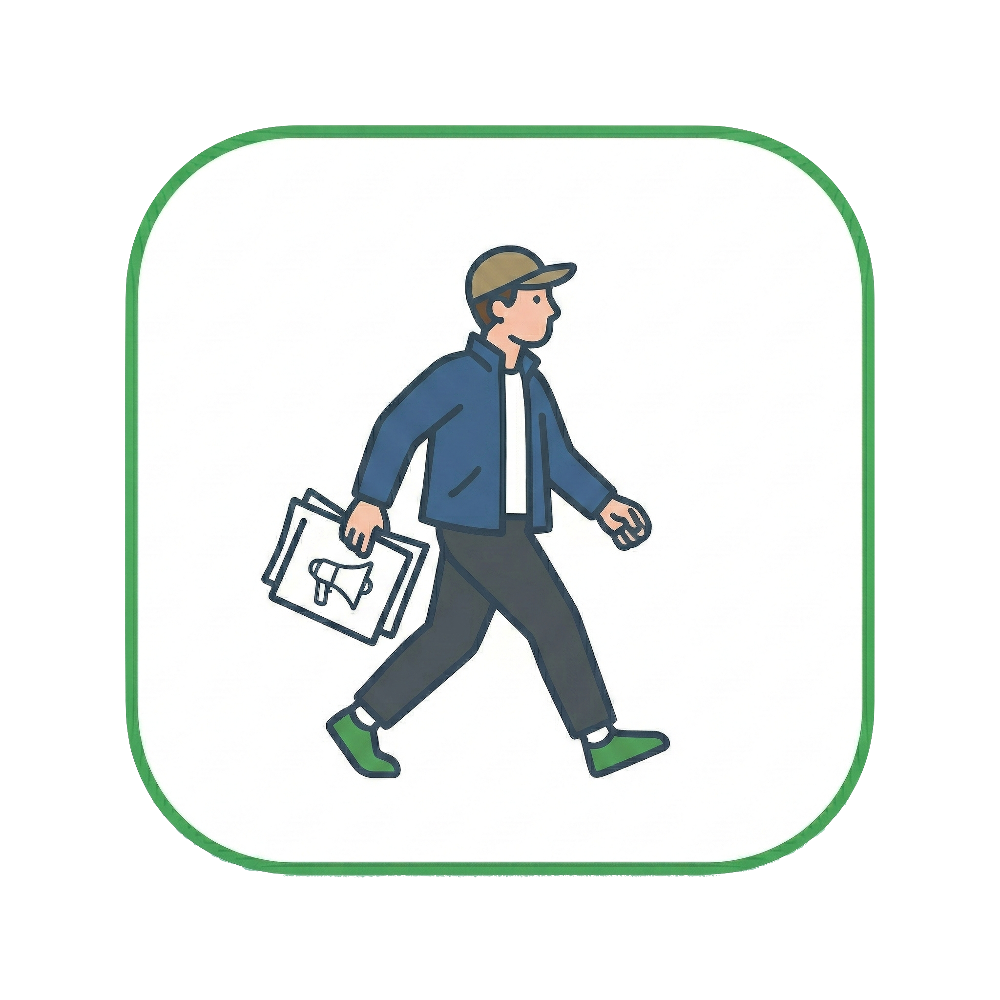
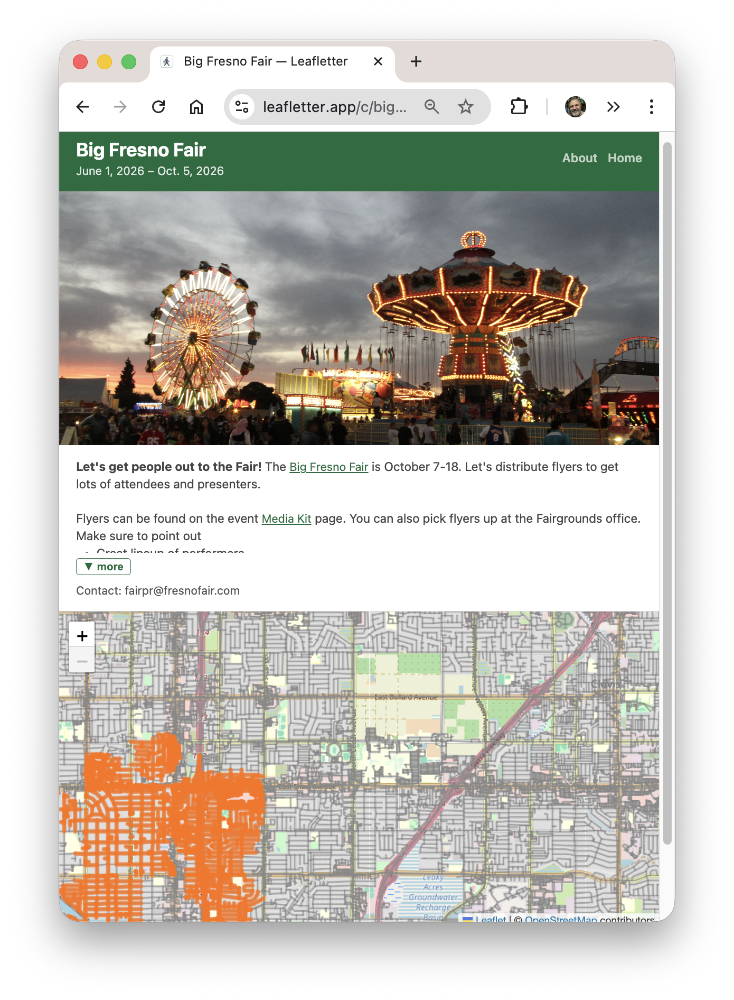
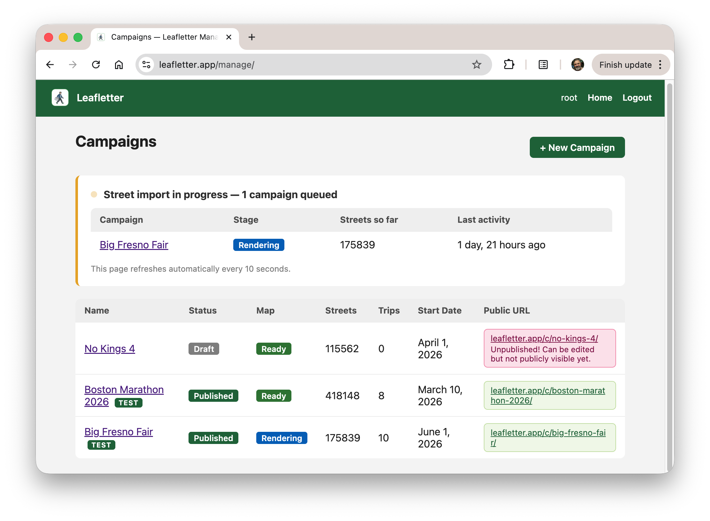
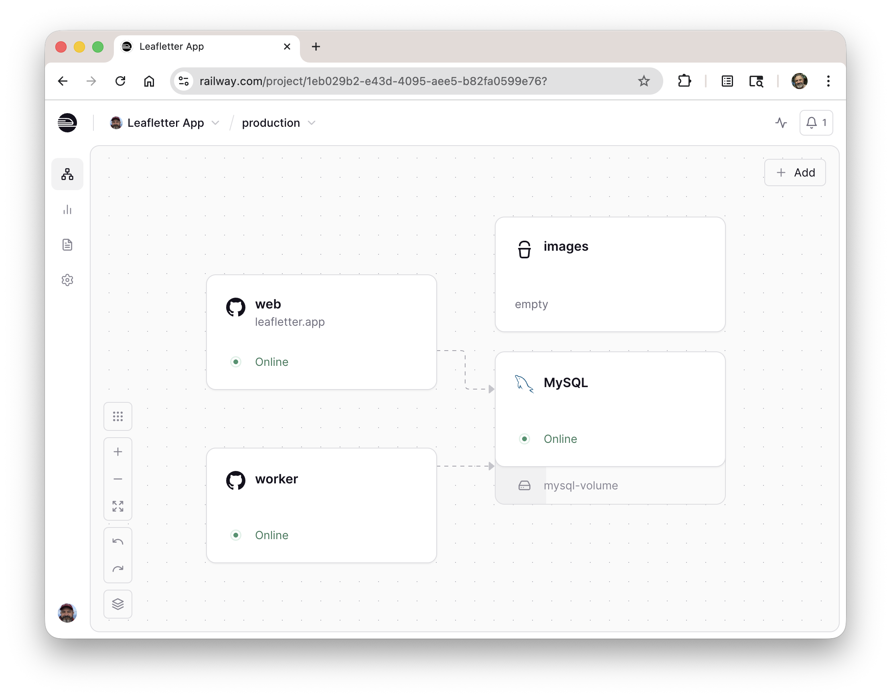

I Built This: Leafletter

I'd like to discuss an app I just wrote. Not so much the app itself, but how I made it and why.
You can try it out yourself. The web version is Leafletter.app and there's an iPhone app available on the Apple App Store. The about page has a short description of what it does. There are a couple of test campaigns where you can log a pretend leaflet distribution trip. Give it a try, that's what those test campaigns are for!
The two main use cases are: volunteers who distribute these leaflets need to know what neighborhoods have already been covered; workers can report in so others don't double up their efforts.
Most of the interaction is through the "worker view". There you have a map showing what's already been done and a button for logging your own trip. There are web and iOS versions, although the iOS one is mostly just a webview.

Why?
I built this app for a few reasons.
First was to help my wife. She's been working with Indivisible Mid-Peninsula here in the SF Bay Area to organize No Kings protests, and needed something like this.
There are existing apps out there for organizing campaigns, but they all cost money and are much more heavyweight than what we need here. Their target markets are people hiring and managing gig workers to distribute things, which means a lot of workflow to keep track of inventory and tracking work (GPS, photos). You wouldn't want all those flyers just in a trashcan somewhere. Instead, my goal was something simple, with a main interface that was easy to use and low friction -- no accounts!
Second, this was the capstone project in the Vibe Coding class I took this quarter. I spent a few more weeks tweaking it, making it more robust, and adding features, but the basics were working in that week I spent on it in class.
Third, it was just plain fun to do. I learned a ton living in Claude Code. The overall experience was joyful. While I'd like for this to get some use, the fun was in the making.
What I Learned
I liked managing things mostly through GitHub Issues. I have a nice workflow:
- File a bug describing what I wanted
- "Let's fix issue #100"
- Simple things just got coded up right then, harder things would go through planning
- Local testing
- "Commit it and close the bug"
- I do the git push
- Infra notices and does its build and push
I did this for issues big and small -- at this writing that means over 100 issues. The bugs were a good way to have Claude capture its plan, or a good place to capture work-in-progress for later.
I recorded a two-minute screencast showing my workflow in action. This one was adding a little navigation feature, a request from my sister.
I also found it helpful to set up some personas that I could delegate tasks to. A Developer to do most of the work, adhering to some rules I put in for good coding practices ("always run tests"). And then two others that were rarely used, on demand: a Project Manager to debug GitHub and a UX Engineer to review and make suggestions ("Great, please open bugs for all of those").
The tricky part was managing the download of the street data and stitching it together into something manageable. It's a fair amount of data, and the OpenStreetMap backend isn't very reliable. Retries and long-running operations needed a queue and worker. The screenshots below show the organizer interface with one event still being processed, and the ops console showing the different servers.


I'm using Railway for hosting for the moment, which has been OK. Their storage setup is a bit wonky (#102) and it might prove to be expensive -- we'll see.
I did all of this easily within my $20/month Claude Code token budget. The biggest expense was the $100 fee to have the privilege of putting something up on Apple's App Store (boo).
Future work
Mobile still could use some work.
- I tried an iOS native interface for a while, but could never get it to perform well enough. But that'd still probably give a better experience.
- I'd like to do an Android app too. I don't have a dev phone, but I imagine I could buy one from a friend at some point.
And then a ton of features: organization views and ACLs, correlating streets with household demographics, better UX for selecting streets, etc. If you have feedback please file a bug!
I'm looking forward to getting this in the hands of some real users soon and getting some feedback.